Finding savings is not the same as making them.
Cloud cost platforms help teams see where their money goes and find ways to spend less. But identifying an opportunity and actually implementing it are two very different things.
Teams could spot idle or underused resources, but acting on them meant switching between tools, investigating usage, coordinating with engineering and changing infrastructure by hand. We wanted to close that gap.
Resource Scheduler was the first project at Astuto that deployed an agent and made changes directly in a customer's cloud environment. It moved OneLens beyond cost visibility and recommendations, towards taking action.
Automation that changes infrastructure has to earn trust.
Cloud resources aren't used around the clock. Development environments, databases and compute instances often stay on long after teams stop using them. Changing infrastructure automatically raises a different set of concerns.
- Knowing when to actLow utilisation doesn't always mean a resource is safe to stop.
- Understanding the impactTeams need confidence that a recommendation won't interrupt critical workloads.
- Configuring automationA schedule needs control over resources, timing, conditions and recurrence.
- Maintaining trustTeams need to see what the system changed, when, and whether it worked.
Make cloud optimisation actionable without making automation feel like a black box.
Five connected stages.
I structured the experience around the questions a team asks on the way from an opportunity to a running, trusted automation.
- DiscoverWhere can we save, and how far have we got?
- EvaluateWhy is this resource recommended, and is it safe to act?
- ConfigureWhich resources, which actions, and when?
- ManageWhat schedules are running, and what's coming up next?
- MonitorWhat ran, did it work, and who changed what?
Make optimisation opportunities visible.
The Scheduler Overview gives teams one view of what they could save by scheduling and of the automation already running.
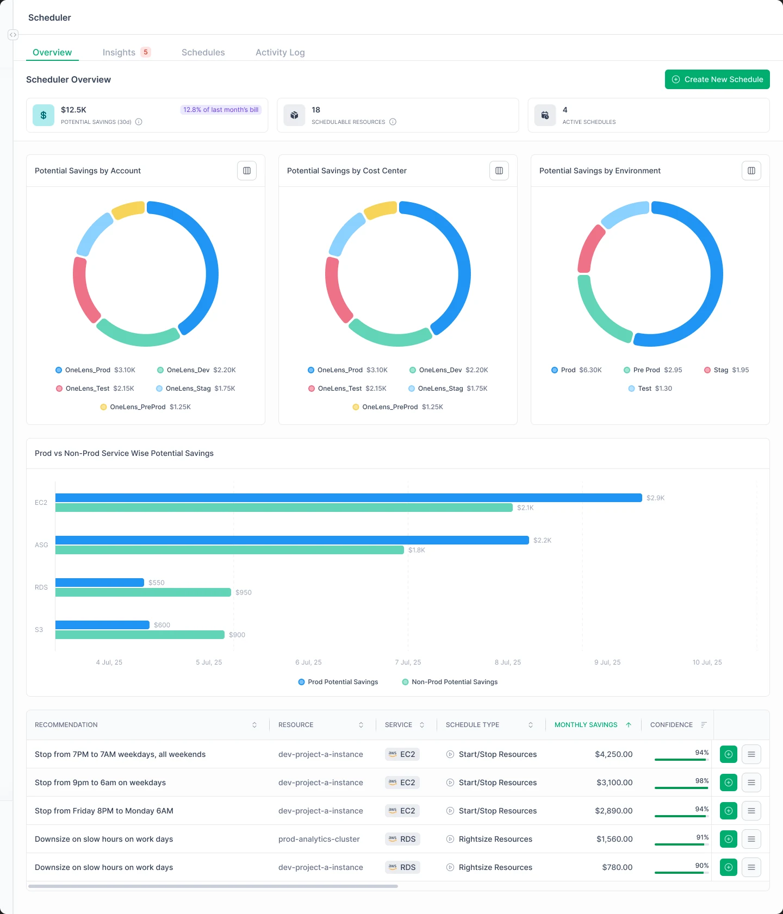
- The opportunityPotential savings over 30 days, shown against last month's bill, and how many resources can be scheduled.
- The progressActive schedules and achieved savings, so teams can see their optimisation work paying off.
- Where it sitsBreakdowns by account, cost centre and environment point teams to the owners who need to act.
Make every recommendation explainable.
A recommendation should do more than tell someone to stop a resource. It should explain why the action is suggested and when it's safe to run.
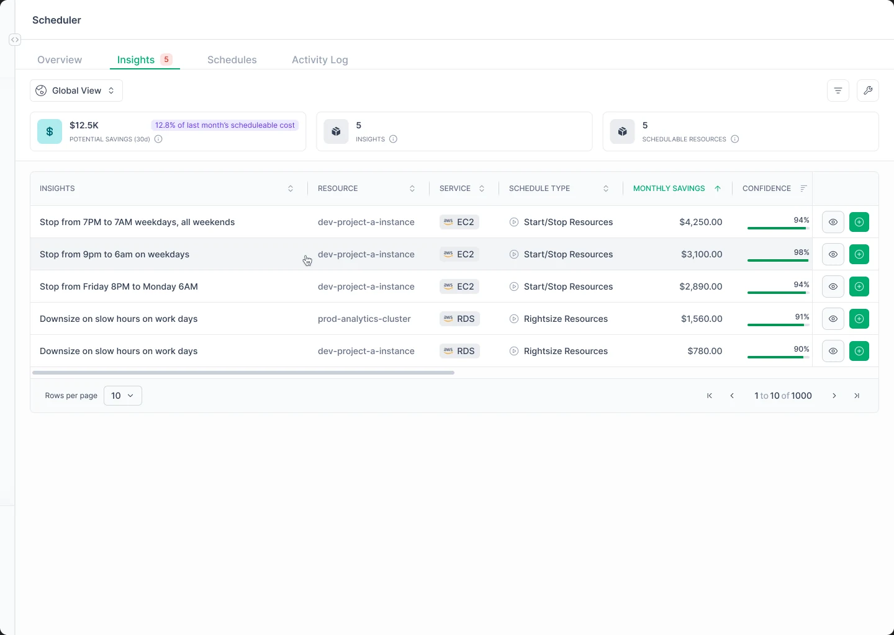
Recommendation details
Opening a recommendation shows the evidence behind it. For example, a development instance that sits at low utilisation every weeknight is recommended for a weekday stop-and-start schedule.
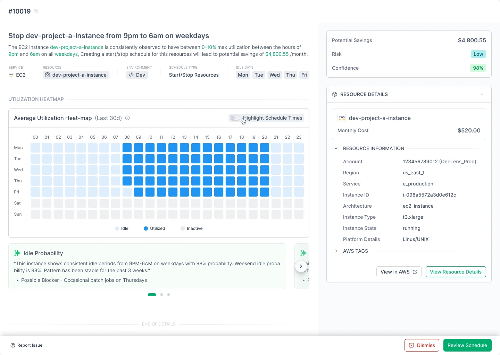
- Usage patternsA 30-day heatmap of utilisation by hour and day, with the proposed schedule times highlighted on it.
- Idle probabilityHow likely the resource is to be idle in that window, and how stable the pattern has been.
- Confidence and riskA confidence score and a risk level next to the potential savings.
- Possible blockersContext such as occasional batch jobs that might make a stop unsafe.
The supporting data lets people judge a recommendation instead of blindly trusting an automated decision.
Give teams control over the automation.
Once a recommendation checks out, the user decides how and when it should run. Creating a schedule has two parts: the target scope and the actions.
Choosing the target
Resources can be targeted in two ways. Conditions select by attributes such as account, region and tags, so new matching resources are picked up automatically. Explicit selection lists specific resource IDs, added one by one or uploaded as a CSV.
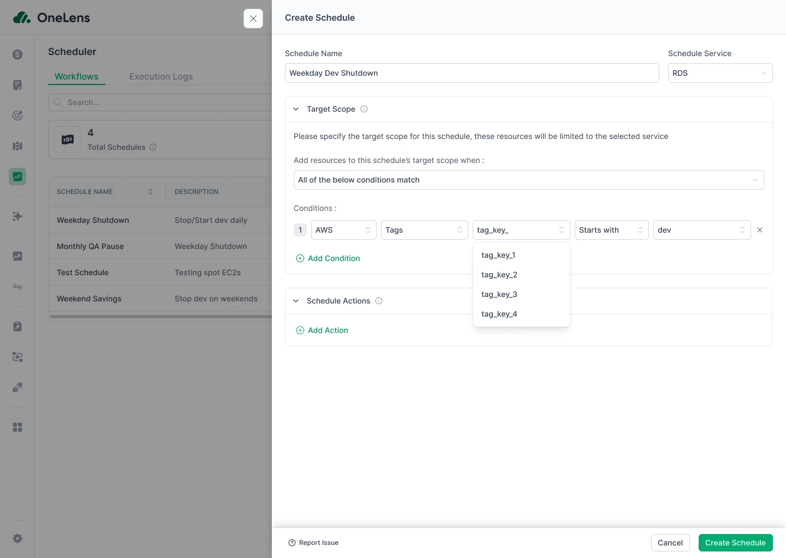
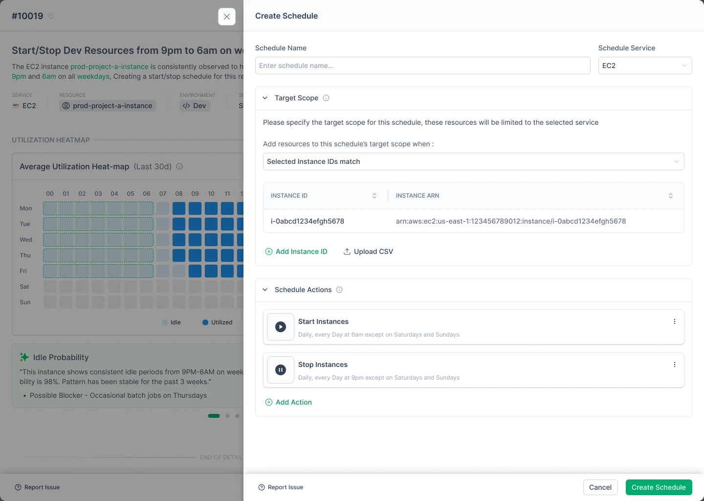
Defining the actions
Recurring actions set what happens, how often, at what time and in which timezone, with days to skip. Where a fixed schedule isn't enough, an action can be triggered by idleness instead: CPU and network thresholds, how long the resource must be idle, and when to start it back up.
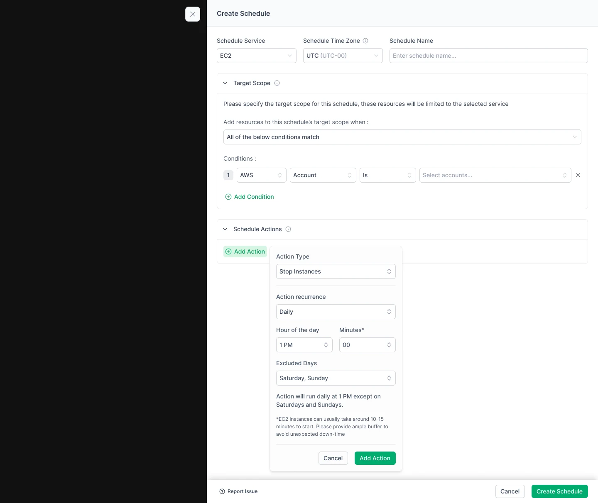
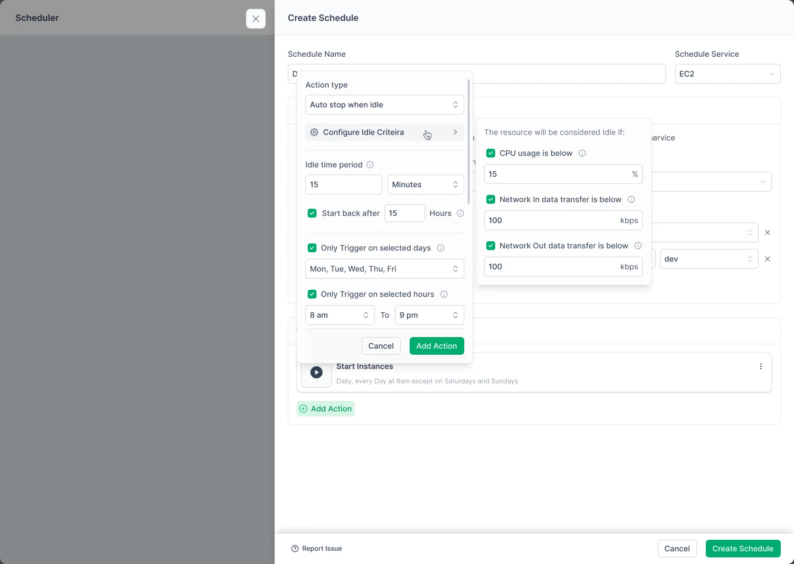
Together these cover both predictable working hours and usage-based automation.
Manage schedules at scale.
As teams create more schedules, they need one place to understand and manage them without going back through the original recommendation.
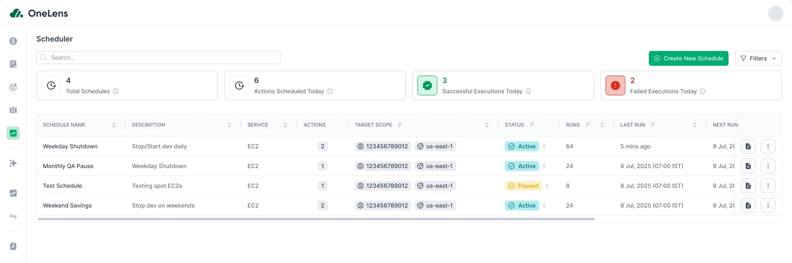
Schedule details
Opening a schedule shows its target conditions and actions in the same structure used to create it. Status can be switched between active and paused from the footer, and the schedule can be edited in place. Tabs for the change log and execution logs sit beside the details.
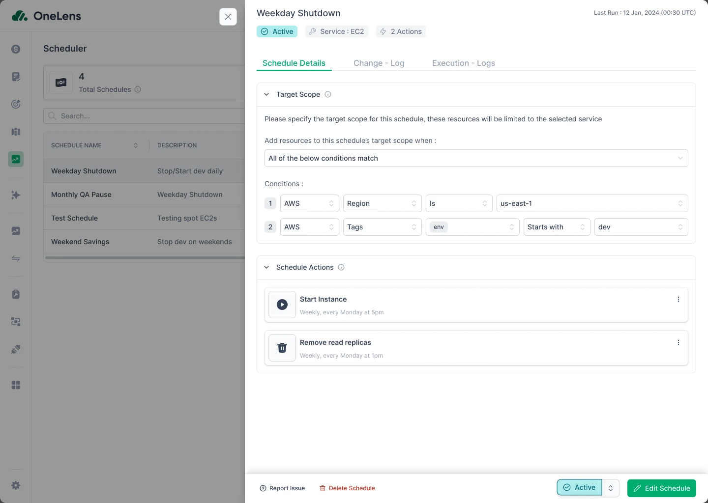
Build operational trust.
Automation needs accountability, especially when it changes customer environments. Execution and activity views make every automated action visible and answerable.
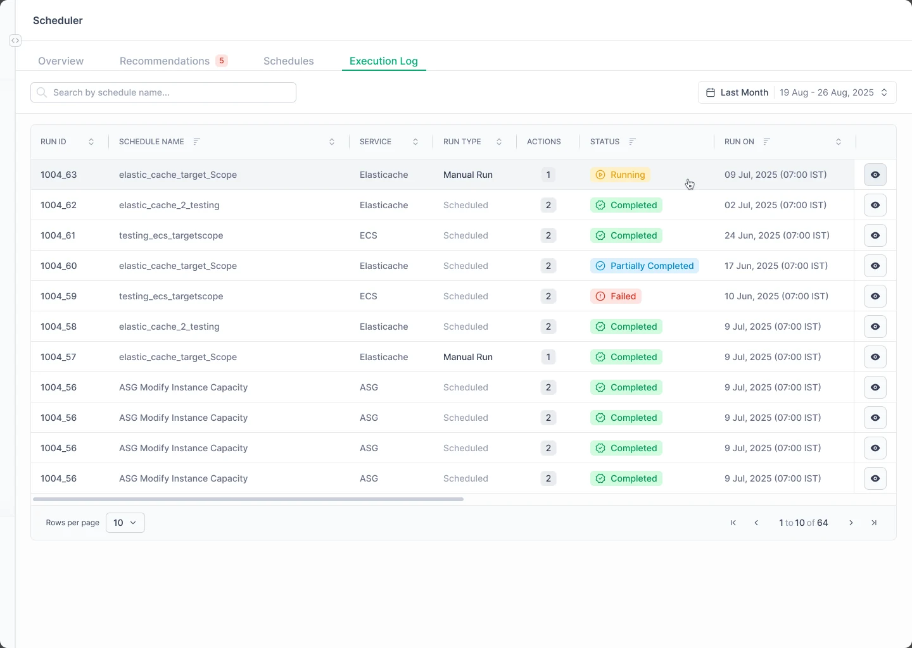
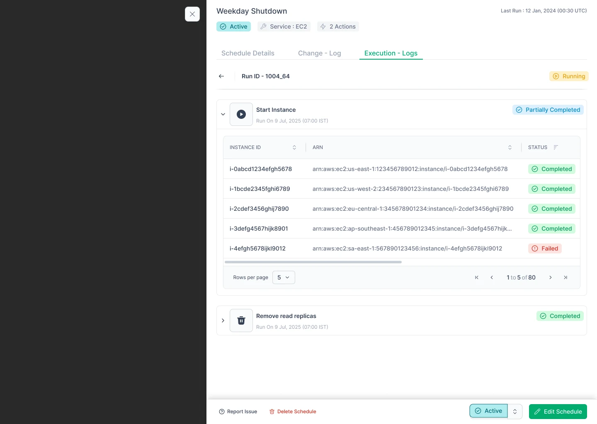
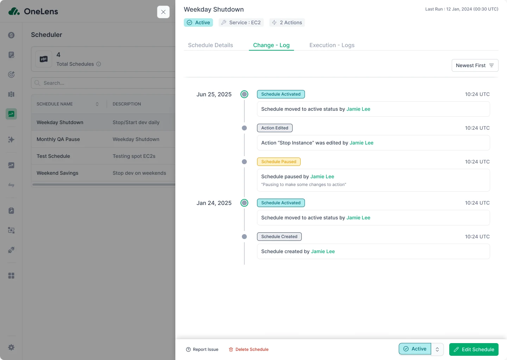
Together, these answer the questions teams ask once automation is live:
- What ran?The action, the schedule it belongs to and whether it was scheduled or run manually.
- When?The run time for each execution, and the next one coming up.
- Did it work?Completed, partially completed or failed, down to each resource.
- What changed?A timeline of edits, pauses and activations, with the person behind each.
Customers were ready to let OneLens act.
Adoption by four major customers validated the need to go beyond finding savings and help teams act on them.
One customer found a scheduling recommendation with the potential to save $800 on a single resource. More importantly, the project showed that customers were willing to use OneLens to move from cost analysis into controlled infrastructure actions.
Optimisation recommendations become much more valuable when users can act on them in the same experience.
A foundation for agent-driven actions.
Resource Scheduler was more than an isolated optimisation module. As the first project that deployed an agent and made changes in a customer's environment, it gave OneLens a new capability and raised a broader question.
What if users could define how their cloud environment should behave, and let OneLens carry out those decisions through governed actions?
That thinking is now shaping the next evolution of the product.
From a scheduler to an Actions Center.
In development · not yet shippedResource Scheduler is being upgraded into a broader Actions Center that brings scheduling, workflows and policies together. The aim is one place to define policies and take actions across cloud resources and AI keys.
Instead of configuring isolated automations, users will be able to:
- Create policies that define when and how actions happen
- Apply actions across cloud resources and AI keys
- Build workflows around those actions
- Add approval flows before sensitive actions run
This moves the product from individual automation features towards a system for governing and carrying out actions across cloud and AI infrastructure.
Helping teams do something about their costs.
This project changed how I think about the role of a FinOps platform. Helping users understand their cloud costs is valuable, but the bigger opportunity is helping them do something about those costs.
Designing Resource Scheduler meant balancing automation with user control, making recommendations explainable, and keeping actions in customer environments visible and manageable.
It also laid the groundwork for a broader direction: moving OneLens from a platform that tells users what to optimise to one that helps them define, govern and carry out those optimisations.